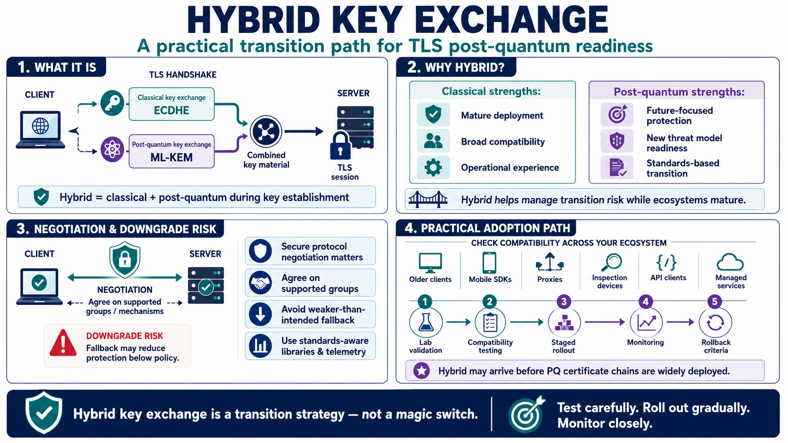

Hybrid Key Exchange in TLS
Connecting to LMS... Progress: in progress

Narration
Hybrid key exchange is a transition strategy that combines classical and post-quantum mechanisms during key establishment. Conceptually, a TLS handshake may use an established classical mechanism, such as an elliptic-curve Diffie-Hellman exchange, alongside a post-quantum mechanism such as ML-KEM. The resulting key material is combined according to protocol rules so the session can benefit from both mature classical security assumptions and post-quantum preparation.
The purpose of hybrid approaches is not to create a magic setting that eliminates all risk. The purpose is to manage transition risk while ecosystems mature. Classical algorithms have deep deployment experience and broad compatibility. Post-quantum mechanisms are designed for a future threat model but need operational experience, library support, protocol support, and monitoring. Hybrid designs can help bridge that gap when implemented through standards-aware mechanisms.
Protocol negotiation becomes very important. Clients and servers need to agree on supported groups or mechanisms without being tricked into weaker protection than intended. Downgrade risk, at a high level, is the risk that negotiation or fallback behavior results in less protection than policy requires. Teams do not need to invent new defenses, but they do need to rely on libraries and protocols that bind negotiation securely and expose useful telemetry.
Hybrid key exchange may appear in production ecosystems before post-quantum certificate chains are widely deployed. That makes it a practical first area for some organizations to test. Even then, adoption requires careful compatibility work. Older clients, mobile SDKs, proxies, inspection devices, API clients, and managed services may behave differently. The right path is lab validation, staged rollout, monitoring, and clear rollback criteria, not a sudden universal switch.